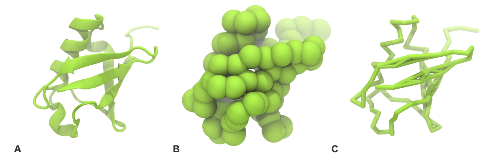
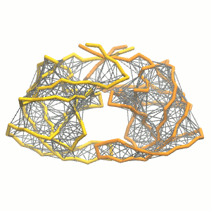
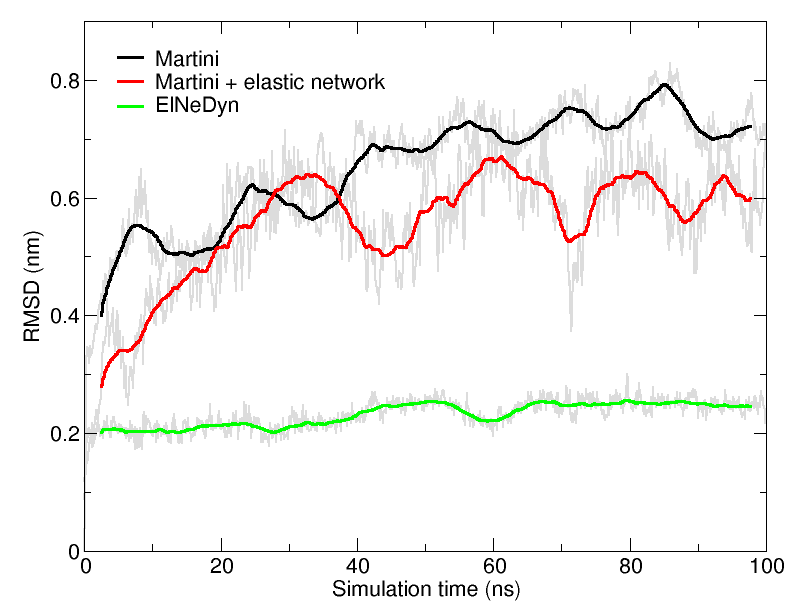
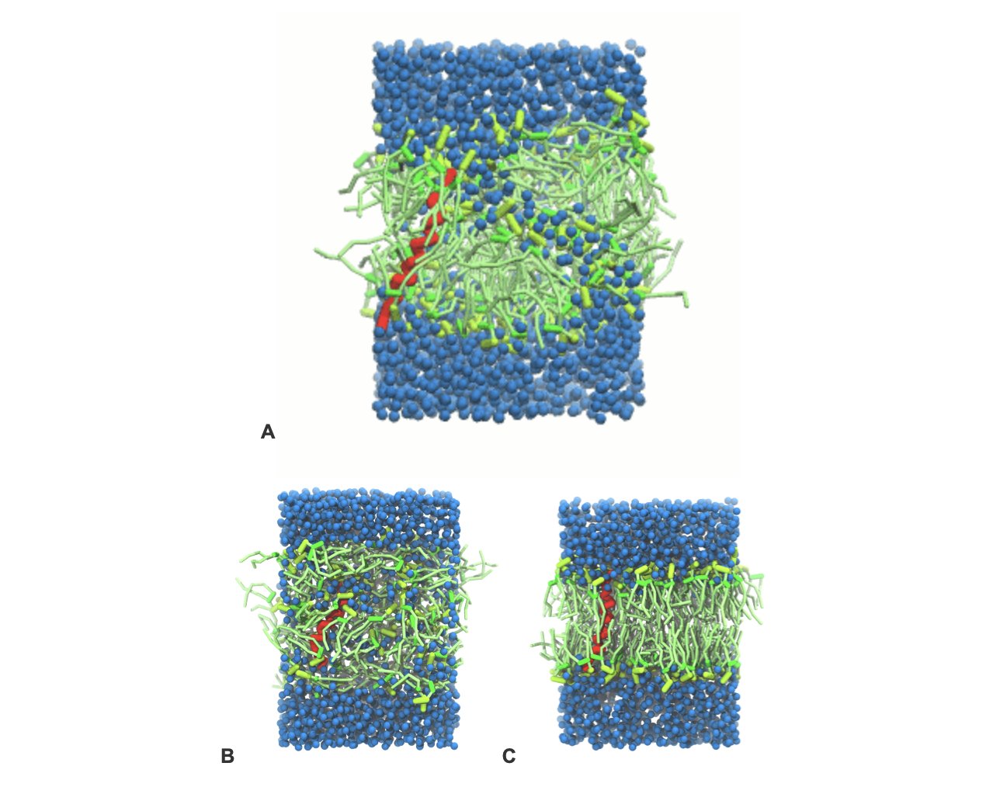

Proteins
The material offered in this page is LEGACY material. This means that it either pertains to older iterations of the Martini force field and/or that it is no longer actively supported. However, this does not mean that there aren’t cool things to be learned here! Have a look! If you are looking for the current iterations of the Martini force field lectures or hands-on tutorials, click here to go back!
Soluble protein
Keeping in line with the overall Martini philosophy, the coarse-grained protein model groups 4 heavy atoms together in one coarse-grain bead. Each residue has one backbone bead and zero to four side-chain beads depending on the residue type. The secondary structure of the protein influences both the selected bead types and bond/angle/dihedral parameters of each residue[1]. It is noteworthy that, even though the protein is free to change its tertiary arrangement, local secondary structure is predefined and thus imposed throughout a simulation. Conformational changes that involve changes in the secondary structure are therefore beyond the scope of Martini coarse-grained proteins.
Setting up a coarse-grained protein simulation consists basically of three steps:
converting an atomistic protein structure into a coarse-grained model;
generating a suitable Martini topology;
solvate the protein in the wanted environment.
Two first steps are done using the publicly available martinize.py script, of which the latest version can be downloaded from Github. However, if you want to be sure you use the same version as the files provided as an example, download this version of martinize.py. The last step can be done with the tools available in the gromacs package and/or with ad hoc scripts. In this part of the tutorial, some basic knowledge of gromacs commands is assumed and not all commands will be given explicitly. Please refer to the previous tutorials (basic tutorial on Martini lipids available here) and/or the gromacs manual.
The aim of the first module of this tutorial is to define the regular work flow and protocols to set up a coarse-grained simulation of ubiquitin in a water box using a standard Martini description. The second module is presenting the variation of the secondary structure which can occur for certain proteins, in our case the HIV-1 protease, and a slightly different approach (ElNeDyn) to avoid this issue. The last module is to set up a coarse-grained simulation of a KALP peptide in its membrane environment.
Soluble protein: the Martini description
Download an example of all the worked files of this module
The downloaded file is called ubiquitin.tgz and contains a worked version (using gromacs 2016.3) of this module. You do not need this file to get going on this tutorial; you can use this worked version to check your own work. The file expands to the directory ubiquitin/martini. Create your own directory to work the tutorial yourself. Instructions are given for files you need to download, etc. You do not need any files to start with. Now go to your own directory.
After getting the atomistic structure of ubiquitin (1UBQ), you’ll need to convert it into a coarse-grained structure and to prepare a Martini topology for it. Once this is done the coarse-grained structure can be minimized, solvated and simulated. The steps you need to take are roughly the following:
- Download 1UBQ.pdb from the Protein Data Bank.
wget http://www.rcsb.org/pdb/files/1UBQ.pdb.gz
gunzip 1UBQ.pdb.gz- The pdb-structure can be used directly as input for the martinize.py script (download available here), to generate both a structure and a topology file. Have a look at the help function (i.e. run
python martinize.py -h) for the available options. Hint, valid for any system simulated with Martini: during equilibration it might be useful to have (backbone) position restraints to relax the side chains and their interaction with the solvent; we are anticipating doing this by asking martinize.py to generate the list of atoms involved. The final command might look a bit like this:
`` bash python martinize.py -f 1UBQ.pdb -o single-ubq.top -x 1UBQ-CG.pdb -dssp /path/to/dssp -p backbone -ff martini22
We are asking for version 2.2 of the force field. When using the `-dssp` option you'll need the dssp binary, which determines the secondary structure classification of the protein backbone from the structure. It can be downloaded from the [CMBI website](http://swift.cmbi.ru.nl/gv/dssp). If installed centrally, the path is usually `/usr/bin/dssp`. As an alternative, you may prepare a file (an example is [1UBQ.ssd](https://cgmartini-library.s3.ca-central-1.amazonaws.com/0_Tutorials/legacy_material/martini2/1UBQ.ssd)) with the required secondary structure yourself and feed it to the script:
``` bash
python martinize.py -f 1UBQ.pdb -o single-ubq.top -x 1UBQ-CG.pdb -ss <YOUR FILE> -p backbone -ff martini22Note that the martinize.py script might not work with older versions of python! Also python 3.x might not work. We know it does work with versions: 2.6.x, 2.7.x and does not work with 2.4.x. If you have tested it with any version in between, we would like to hear from you.
- If everything went well, the script generated three files: a coarse-grained structure (
.pdb; cf. Fig. 1), a master topology file (.top), and a protein topology file (.itp). In order to run a simulation you need two more: the Martini topology file (martini_v2.x.itp, if you specified version 2.2, you’ll want the corresponding file) and a run parameter file (.mdp). You can get examples from the Martini website or from the protein tutorial package. Don’t forget to adapt the settings where needed!

- Do a short (ca. 10-100 steps is enough!) minimization in vacuum. Before you can generate the input files with grompp, you will need to check that the topology file (
.top) includes the correct martini parameter file (.itp). If this is not the case, change the include statement. Also, you may have to generate a box, specifing the dimensions of the system, for example using gmx editconf. You want to make sure, the box dimensions are large enough to avoid close contacts between periodic images of the protein, but also to be considerably larger than twice the cut-off distance used in simulations. Try allowing for a minimum distance of 1 nm from the protein to any box edge. Then, copy the example parameter file, and change the relevant settings to do a minimization run. Now you are ready to do the preprocessing and minimization run:
gmx editconf -f 1UBQ-CG.pdb -d 1.0 -bt dodecahedron -o 1UBQ-CG.gro
gmx grompp -p single-ubq.top -f minimization.mdp -c 1UBQ-CG.gro -o minimization-vac.tpr
gmx mdrun -deffnm minimization-vac -v- Solvate the system with
gmx solvate(an equilibrated water box can be downloaded here; it is calledwater.gro). Make sure the box size is large enough (i.e. there is enough water around the molecule to avoid periodic boundaries artifacts) and remember to use a larger van der Waals distance when solvating to avoid clashes, e.g.:
gmx solvate -cp minimization-vac.gro -cs water.gro -radius 0.21 -o solvated.gro- You need to update the topology to reflect the water added. Here, this is done by copying the topology for the single ubiquitin to system.top and editing that to add a line with the number of water beads. You will then do a short energy minimization and position-restrained (NPT) equilibration of the solvated system. Since the martinize.py script already generated position restraints (thanks to the
-pflag), all you have to do is specifydefine = -DPOSRESin your parameter file (.mdp). At this point you must also add the appropriate number of water beads to your system topology (.top); the total number added by gmx solvate can be seen in the output of the command; alternatively trygrep -c W system-solvated.gro(where W is the name of a water bead).
gmx grompp -p system.top -c solvated.gro -f minimization.mdp -o minimization.tpr
gmx mdrun -deffnm minimization -v
gmx grompp -p system.top -c minimization.gro -f equilibration.mdp -o equilibration.tpr
gmx mdrun -deffnm equilibration -v- Start production run (without position restraints!); if your simulation crashes, some more equilibration steps might be needed. NOTE that you will get a warning about simultaneous use of Parrinello-Rahman barostat and newly generated velocties. This can be ignored by the -maxwarn 1 option. A sample trajectory is shown in Figure 2.
gmx grompp -p system.top -c equilibration.gro -f dynamic.mdp -o dynamic.tpr -maxwarn 1
gmx mdrun -deffnm dynamic -v
- PROFIT! What sort of analysis can be done on this molecule? Start by having a look at the protein with
vmd. (see tutorial, use the script cg_bonds-v5.tcl to show the ubiquitin with the bonds as defined in the topology) or pymol. It is often convenient to convert the trajectory so that translation and rotation of ubiquitin is removed. (NOTE, however, that the water is also rotated and this may create some unwanted effects when viewing. It is up to you, really. One thing that does make sense is to make sure beads that belong to the protein are not split across periodic boundary conditions, see the section on elastic network below for explicit instructions how to do this with gromacs tools.) Be aware that the .gro file given to VMD must contain the same (number of) atoms as the .xtc file. Therefore, if you choose to write only the protein to the .xtc file, also prepare a .gro file with only the protein (minimization-vac.gro will do).
gmx trjconv -f dynamic.xtc -s dynamic.tpr -fit rot+trans -o viz.xtc
vmd equilibration.gro viz.xtcTo view with pymol, the trajectory must also be converted to .pdb format. This gives the opportunity to add bond information, which helps in viewing the molecule. Be aware that this file may be very large: you may want to reduce the number of frames. You can also reduce the size by only writing out the protein coordinates (but you may want to visualize the solvent as well, so it is up to you).
gmx trjconv -f dynamic.xtc -s dynamic.tpr -fit rot+trans -o viz.pdb -conect
pymol viz.pdbStandard analysis for proteins includes RMSD, RMSF, radius of gyration. Refer to tutorials for atomistic models, for example by Tsjerk Wassenaar or Justin Lemkul. For the impatient, o if you just need a quick reminder: RMSD and RMSF can be calculated using gromacs tools gmx rms and gmx rmsf, respectively.
Soluble protein: the elastic network approach
Download an example of all the worked files of this module, with gromacs version 5.0.7
Download an example of all the worked files of this module with gromacs 2016.3
The aim of this second module is to see how application of elastic networks can be combined with the Martini model to conserve secondary, tertiary and quartenary structures more faithfully without sacrificing realistic dynamics of a protein. We offer two alternative routes. Please be advised that this is an active field of research and that there is as of yet no “gold standard”. In fact, recently, Martini was combined with the Go model[3]. Earlier, the tool domElNeDin was made available to remove elastic bonds between selected domains after the elastic network was built.
The first option offered here is to generate a simple elastic network on the basis of a standard Martini topology. The second options is to use an ElNeDyn network. This second option constitutes quite some change to the Martini force field and thus is a different force field in itself. The advantage is that the behavior of the method has been well described[2]. Both approaches can be set up using the martinize.py script and will be shortly described below.
We recommend to simulate a pure Martini coarse-grained protein (without elastic network) in a first step, and then see what changes are observed when using an elastic network on the same protein. Note that you’ll need to simulate the protein for tens to hundreds of nanoseconds to see major changes in the structure; sample simulations are provided in the archive.
You should be aware of the following aspects:
the structure deposited in the Protein Data Bank (1A8G) includes a ligand. This ligand is not known as a building block to martinize, and is totally ignored, i.e. it is NOT included in the topology, nor in the coarse-grained structure. If you want to study this or other ligand binding, you will need to build a Martini topology for the ligand yourself and map the atomistic coordinates to CG coordinates.
the protein is charged (each monomer has charge +2). It is recommended to add at least neutralizing counter ions; on top of that, you can add ions to reflect some ionic strength of the solution. NOTE that you’ll need to get hold of a Martini topology file that specifies the ion topologies.
the protein is a dimer. By default, you will get a topology file with the two subunits being treated as individual molecules. This usually leads to some extra work in visualization and analysis when the subunits end up at different ends of the periodic cell. You can fix this afterwards by treating the trajectory so as to make sure the subunits are always near to each other. There are two ways to do this. The first one is to cluster the protein of the trajectory, using the gromacs tool
gmx trjconvwith the-clusterflag. The disadvantage is that the protein complex may show jumps over the periodic boundaries. The second way takes more step, but the jumping can be avoided. To do this, make a separate topology which merges the subunits into a single .itp file, which leads the dimer to be seen as a single molecule (add the flag-merge A,Bto the martinize command). Prepare a .tpr file with that topology and use that for analysis, and for rewriting the trajectory with for example removing rotation and translation of the protein. NOTE that adding the flag-merge A,Bto the martinize command with elastic network options introduces elastic bonds between subunits! This is something you probably do not want. Standard elastic network with Martini and standard ElNeDyn do not add elastic bonds between subunits!
Martini
Repeat steps 1 to 7 from the previous exercise with the HIV-1 protease (1A8G.pdb).
Visualize the simulation, look especially at the binding pocket of the protein: does it stay closed, open up? What happens to the overall protein structure?
Martini + elastic network
The first option to help preserve higher-order structure of proteins is to add to the standard Martini topology extra harmonic bonds between non-bonded beads based on a distance cut-off. Note that in standard Martini, long harmonic bonds are already used to impose the secondary structure of extended elements (sheets) of the protein. The martinize.py script will generate harmonic bonds between backbone beads if the options -elastic is set. It is possible to tune the elastic bonds (e.g.: make the force constant distance dependent, change upper and lower distance cut-off, etc.) in order to make the protein behave properly. The only way to find the proper parameters is to try different options and compare the behavior of your protein to an atomistic simulation or experimental data (NMR, etc.). Here we will use basic parameters in order to show the principle.
- Use the
martinize.pyscript to generate the coarse-grained structure and topology as above. For the elastic network, use the extra following flags:
python martinize.py [...] -elastic -ef 500 -el 0.5 -eu 0.9 -ea 0 -ep 0-elastic), sets the elastic bond force constant to \(500 kJ mol^{-1} nm^{-2}\) (-ef 500), the lower and upper elastic bond cut-off to 0.5 and 0.9 nm, respectively (-el 0.5 and -eu 0.9), and makes the bond strengths independent of the bond length (elastic bond decay factor and decay power, -ea 0 and -ep 0, respectively; these are default). The elastic network is defined in the .itp file by an #ifdef statement, and is switched on by default (#define NO_RUBBER_BANDS in the .top or .itp file switches it off). Note that martinize.py does not generate elastic bonds between i → i+1 and i → i+2 backbone bonds, as those are already connected by bonds and angles (cf. Fig. 3). Also, elastic bonds are only added between beads that belong to the same subunit.

- Proceed as before (steps 4 to 7) and start a production run. Keep in mind we are adding a supplementary level of constraints on the protein; some supplementary relaxation step might be required (equilibration with position restraints and smaller time step for instance). If you have a set-up for the protein without elastic bonds (including solvent and possibly ions), you may use a snapshot from that simulation as the starting point here.
ElNeDyn
The second option to use elastic networks in combination with Martini puts more emphasis on remaining close to the overall structure as deposited in the PDB than standard Martini does. The main difference from the standard way (used in the previous exercise) is the use of a global elastic network between the backbone beads to conserve the conformation instead of relying on the angle/dihedral potentials and/or local elastic bonds to do the job. The position of the backbone beads is also slightly different: in standard Martini the center of mass of the peptide plane is used as the location of the backbone bead; but in the ElNeDyn implementation the positions of the Cα-atoms are used instead. The martinize.py script automatically sets these options and sets the correct parameters for the elastic network. As the elastic bond strength and the upper cut-off have to be tuned in an ElNeDyn network, these options can be set manually (-ef and -eu flags); note however these parameters have been extensively studied and were optimized to \(500 kJ mol^{-1} nm^{-2}\) and \(0.9 nm\),[2].
- Use the martinize.py script to generate the coarse-grained structure and topology as above. The following flag will switch martinize.py to the ElNeDyn default representation:
python martinize.py [...] -ff elnedyn22- Proceed as before and start a production run.
Now you’ve got three simulations of the same protein with different type of elastic networks. If you do not want to wait, some pre-run trajectories can be found in the archive. One of them might fit your needs in terms of structural and dynamic behavior. If not, there are an almost infinite number of ways to further tweak the elastic network!

An easy way to compare the slightly different behaviors of the proteins in the previous three cases is to follow deviation/fluctuation of the backbone during simulation (and compare it to an all-atom simulation if possible). RMSD (Fig. 4) and RMSF can be calculated using gromacs tools (gmx rms and gmx rmsf). vmd provides also a set of friendly tools to compute these quantities, but needs some tricks to be adapted to coarse-grained systems (standard keywords are not understood by vmd on coarse-grained structures).
To go further: membrane protein
Download an example of all the worked files of this module
Download an example of all the worked files of this module using GROMACS version 2016.3
In the last module of this protein tutorial, we will increase the complexity of our system by embedding the protein in a lipid bilayer (the tutorial on the lipidome, lipid self-assembly and bilayer analysis can be followed here). We propose here to have a look at the tilt and the dimerization of KALP peptides embedded in DPPC membrane. The coarse-grained structure (kalp.gro) and topology (kalp.itp) of KALP can just be downloaded by clicking on the links; no need to repeat the steps to martinize the peptide. We start by solvating the protein directly with the membrane environment so that it ends up inserted. Different ways to perform this step possible; a non-exhaustive list, ordered by decreasing complexity, is presented below (note that this tutorial will focus only on the third case):
- A bilayer self-assembly dynamics, as presented in the first module of the lipid tutorial, will result in the self-insertion of the KALP inside the bilayer (Fig. 5). This method is not followed in this tutorial but you will also find the respective files in the downloaded bundle.

If a stable DPPC membrane with the wanted box dimensions is already available,
gmx solvatewill be able to insert the peptides in the bilayer (the peptides have to be pre-centered and positioned to ensure their presence inside the membrane).The use of the script
insane.py, downloadable here, allows the setting up of bilayers of arbitrary composition around our protein.
The latter method, being the easiest and the most straightforward, is recommended and is the method we present here.
- The syntax of the
insane.pyscripts is very similar to what was used so far; it can be invoked by runninginsane.py -h. (As with other scripts, updates appear regularly. If you want to be sure you use the same version as used in the example files provided, download the file linked to in the command line below. Otherwise, get the latest from Github via the Tools pages on Downloads.) Let’s see a practical example:
python insane.py -f kalp.gro -o system.gro -p system.top -pbc square -box 7,7,9 -l DPPC -u DPPC -center -sol WThe previous command line will set up a complete system, containing a squared DPPC bilayer of 7 nm, insert the KALP peptide centered in this bilayer and solvate the whole thing in standard coarse-grained water. More on the insane.py tool can be found in separate tutorials, notably setting up a complex bilayer.
Proceed as before and start a production run. To remind you, this involves (1) editing the system.top file to reflect the version of Martini you want to use (the KALP topology provided is version 2.1) and providing include statements for the topology files; (2) downloading or copying definitions of Martini version you want and the DPPC lipid topology file from the lipidome; (3) using the correct names of the molecules involved; (4) downloading or copying set-up
.mdpfiles for minimization, equilibration, and production runs and if necessary, editing them (bilayer simulations are best done using semi-isotropic pressure coupling and you may want to separately couple different groups to the thermostat(s)); (5) running the minimization and equilibration runs.Generate a new system in which membrane thickness is reduced (different the lipid type, DLPC for instance). Observe how the thickness is affecting the tilt of the transmembrane helix; compare it to the previous simulation.
Double these previous boxes in one dimension (
gmx genconf) and rerun the simulations. Observe the different dimerization conformations (parallel or anti-parallel tilts). Note that more than one simulation might be required to observe both cases! It may be worth your while to study this paper by Sengupta and Marrink[4] pointing out sampling issues in the study of helix association.Choose your favorite orientation and reverse-map the final conformation (tutorial on reverse-mapping available here). Simulate this system atomistically to refine and have a closer and detailed look at the interactions between KALPs.
Tools and scripts used in this tutorial
gromacshttp://www.gromacs.org/martinize.py(downloadable here)insane.py(downloadable here)
References
[1] L. Monticelli, S.K. Kandasamy, X. Periole, R.G. Larson, D.P. Tieleman, S.J. Marrink. The MARTINI coarse grained forcefield: extension to proteins. J. Chem. Theory Comput., 4:819-834, 2008.
[2] X. Periole, M. Cavalli, S.J. Marrink, M.A. Ceruso. Combining an elastic network with a coarse-grained molecular force field: structure, dynamics, and intermolecular recognition. J. Chem. Theory Comput., 5:2531-2543, 2009.
[3] A.B. Poma, M. Cieplak, P.E. Theodorakis Combining the Martini and structure-based coarse-grained approaches for the molecular dynamics of conformational transitions in proteins. J. Chem. Theory Comput., 13:1366-1374, 2017.
[4] D. Sengupta and S.J. Marrink. Lipid mediated Interactions tune the association of Glycophorin A helix and its disruptive mutants in membranes. Phys. Chem. Chem. Phys., 12:12987-12996, 2010.